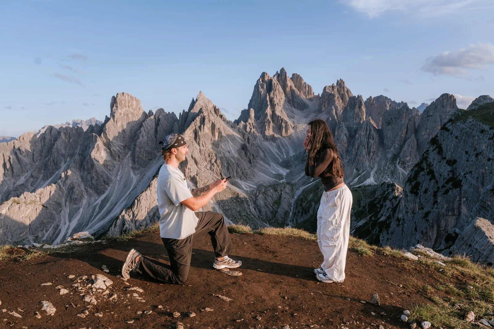
Ein Antrag in den Bergen ist Logistik und Nerven zugleich. Macht ihr es richtig, habt ihr die beste Überraschung eures Lebens im schönsten Licht der Welt — die Frage gestellt mit einem ganzen Gipfelkranz als Zeuge, und jede Sekunde davon leise fotografiert. Hier steht alles, was wir beim Begleiten von Anträgen in den Dolomiten und den weiteren Alpen gelernt haben: wie ihr das Geheimnis wahrt, wo ihr niederkniet, wie ihr das Wetter lest, und was nach dem Ja passiert.
Bereit, ein Überraschungs-Antragsshooting zu buchen →
Ein Bergantrag ist ein kleines, präzises Stück Theater: Eine Person kennt den Plan, die andere ahnt nichts, und ein Fotograf ist unsichtbar in Sichtweite, um den Moment zu fangen, in dem alles zusammenkommt. Der Ort erledigt die halbe Arbeit — ein Seeufer bei erstem Licht, eine Aussicht über den Wolken, eine Wiese unter schroffen Gipfeln —, doch der Zauber ist die Überraschung, und sie zu schützen ist bis zum Kniefall unsere ganze Aufgabe. Danach wird es eine Feier, und wir fotografieren weiter, während ihr schwebt.
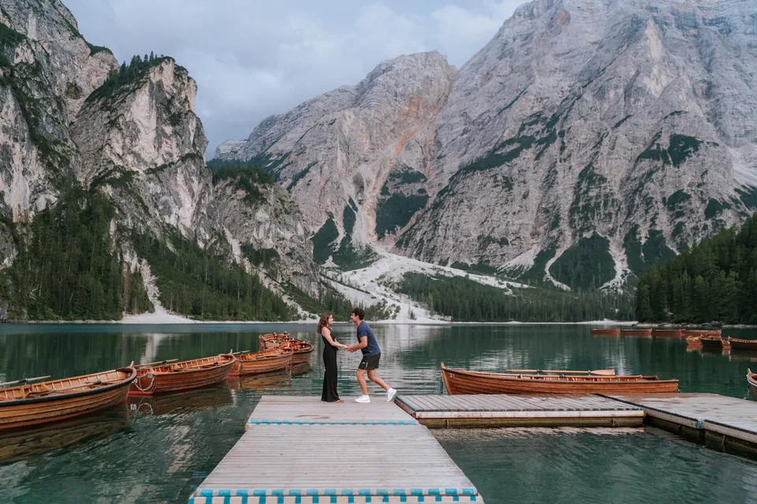
Paare kommen von überall dafür zu uns — manche leben ohnehin für die Berge, manche wollen einfach einen Ort, der nie gewöhnlich wirken wird. Es funktioniert für Sportliche und weniger Sportliche, im Hochsommer und im tiefen Schnee, an einem See, zu dem man fahren kann, oder auf einem Gipfel, den man sich verdienen muss. Was auch immer ihr euch vorstellt — der Ablauf ist gleich: ein leiser Zustieg, eine natürliche Pause, die Frage, und dann die lauteste, glücklichste Stunde eurer Reise.
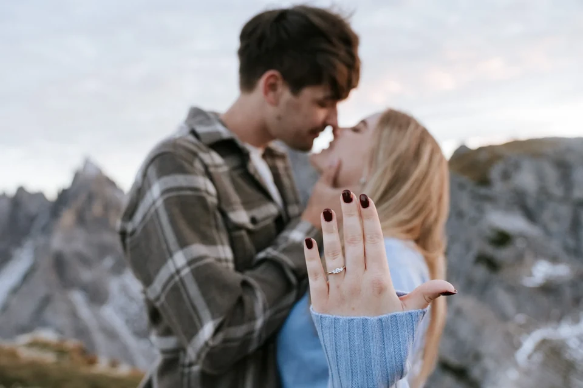
1. Erste Nachricht. Alles läuft über die planende Person — nie ein gemeinsamer Chat. Wir lernen die Geschichte, das Fitnesslevel und die Stimmung kennen. 2. Ort & Zeit. Wir wählen einen Ort mit natürlichem Grund für eine Pause und dem besten Licht, meist Sonnenaufgang. 3. Die Tarngeschichte. Wir vereinbaren einen glaubhaften Grund, früh oben zu sein — „eine Sonnenaufgangswanderung“, „ein Fotografen-Freund trifft uns“. 4. Das Signal. Ihr gebt uns einen kleinen, unsichtbaren Hinweis — eine Hand am Rücken, das Absetzen einer Mütze —, damit wir wissen, dass es gleich soweit ist. 5. Aus der Distanz. Wir fotografieren mit langer Brennweite, leise und unbemerkt. 6. Die Auflösung. Nach dem Ja kommen wir herüber, stellen uns richtig vor und machen ein entspanntes Paar-Shooting daraus.
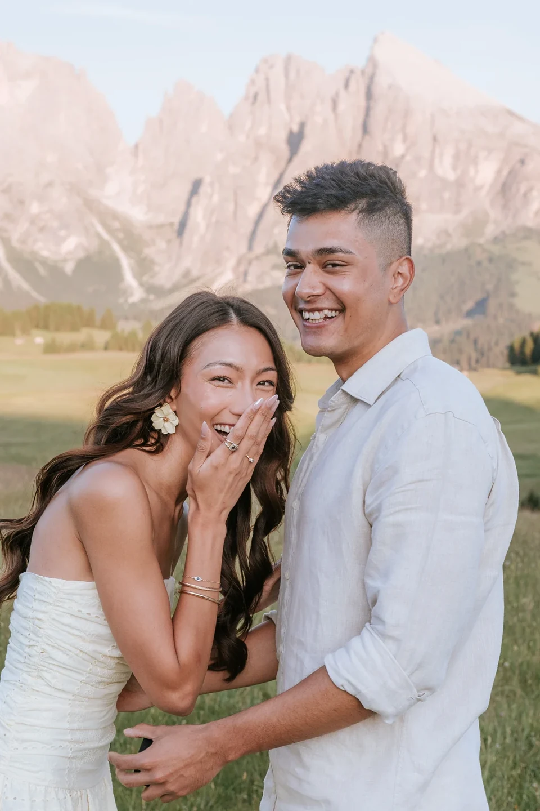
Das erste Licht ist unser Favorit, und nicht nur wegen der Farbe. Bei Sonnenaufgang sind die Aussichtspunkte leer, die Luft ist ruhig, und die überraschte Person hat kein Publikum, vor dem sie sich befangen fühlt. Wir suchen einen Ort mit eingebautem Grund zum Anhalten — ein Geländer, eine Bank, ein Gipfelkreuz, das Ende eines Stegs —, damit das Innehalten das Natürlichste der Welt wirkt und kein inszeniertes Stoppen. Dann lassen wir den Ort sprechen.

Auch die goldene Stunde am Abend funktioniert und ist freundlicher zu Morgenmuffeln — aber es ist voller, also wählen wir den Ort sorgfältiger. Die genauen Zeiten schwanken übers Jahr um fast drei Stunden, deshalb beginnt der Plan immer mit eurem Datum: im Hochsommer steigt die Sonne gegen 05:15–06:00 Uhr über die Gipfel und geht erst gegen 21:00 Uhr unter, in Frühling und Herbst liegt der Sonnenaufgang etwa zwischen 06:00 und 07:30 Uhr, und im Winter ist er zivilisierte 07:45–08:00 Uhr, während das Licht schon gegen 16:30–17:15 Uhr wieder weg ist.
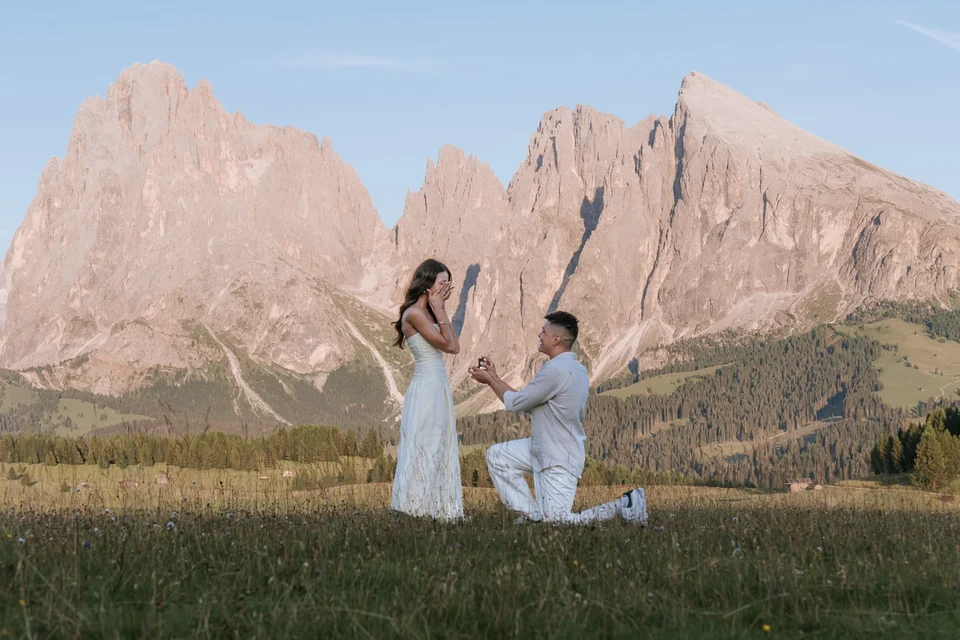
Der ganze Plan lebt in einem einzigen Nachrichtenstrang zwischen uns und der antragenden Person — wir schreiben nie euch beiden, und wir markieren nie den Ort. Am Morgen sind wir einfach zuerst da, die Kameras scheinbar auf die Berge gerichtet, nicht auf euch. Ein Teleobjektiv lässt uns weit genug entfernt stehen, dass wir wie ein weiterer früher Wanderer mit Stativ wirken. Die Einzigen, die uns je bemerken, sind die Eingeweihten. Diese Distanz ist auch der Grund, warum die Bilder so unbefangen sind: Niemand spielt für eine Kamera, die er sieht.
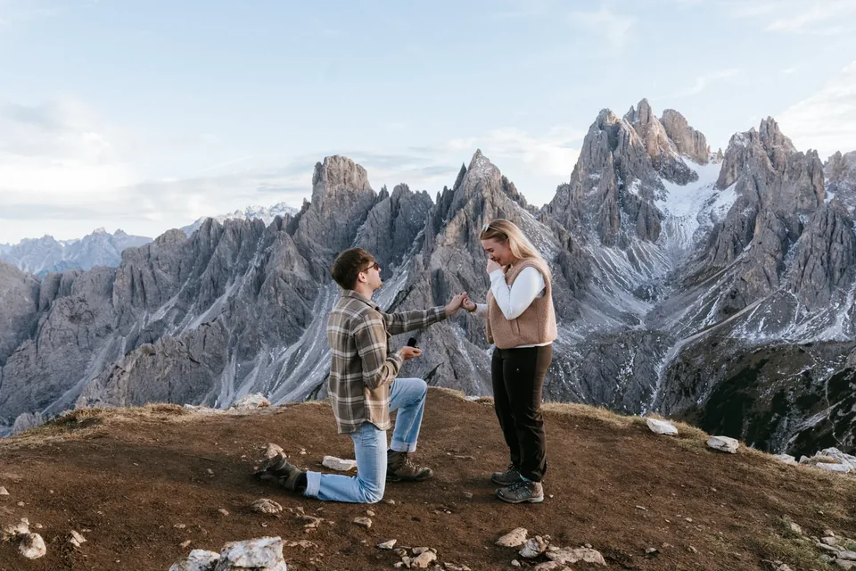
Oft gibt es Mitwisser. Eine Freundin, die die Sonnenaufgangswanderung vorschlägt, ein Elternteil, das für den Anruf danach eingeweiht ist, ein Hotel, das uns früh hineinlässt — wir stimmen das alles leise ab, damit die Geschichte trägt. Und ist euer Gegenüber der misstrauische Typ, spielen wir die Tarnung aus: Wir lassen uns gern als Freunde eines Freundes vorstellen, die zufällig Berge im Morgengrauen fotografieren. Je gewöhnlicher wir wirken, desto größer die Überraschung.
Die besten Antragsorte teilen eines: einen natürlichen Grund für eine Pause und wenig Aufwand beim Hinkommen — eine lange, schweißtreibende Wanderung verrät oft alles. Seen am Straßenrand sind perfekt. Der Steg am Pragser Wildsee oder der kleine Lago d'Antorno schenken euch ein Geländer und einen Wasserspiegel, ehe jemand kommt. Bergbahn-Aussichten sind ebenso bequem — die Terrasse des Sass Pordoi oder die Nordkette wenige Minuten über Innsbruck —, doch die Bahnen öffnen deutlich nach Sonnenaufgang — die Nordkette fährt die erste Gondel gegen 08:00 Uhr, die Seceda erst gegen 08:30 Uhr —, für einen echten Erstlicht-Antrag sind das also eher Tages- oder Golden-Hour-Orte, außer ihr übernachtet oben oder steigt zu Fuß auf. Wo eine Bahn zum Plan gehört, bauen wir den Morgen nach dem Fahrplan.
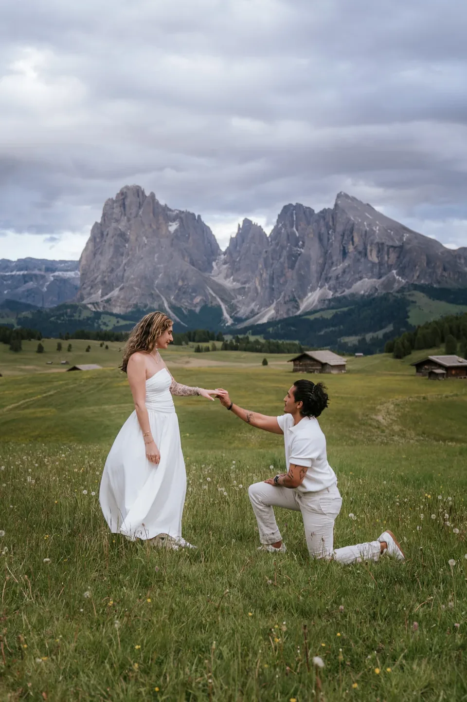
Offene Wiesen wie die Seiser Alm schenken euch Raum, weiches Gras und den großen Zahn des Langkofels als Kulisse — sanft unter den Füßen und endlos fotogen. Und wenn ihr doch einen Gipfel wollt, wählen wir einen mit kurzem Weg von Bahn oder Straße, damit die Anstrengung nie verrät, was kommt. Wir stimmen den Ort auf Fitness, Saison und Licht ab und suchen immer eine zweite Option aus, falls die erste voll oder zugezogen ist.

Tragt den Ring auf dem Weg nach oben in etwas Verschlossenem, Sicherem — einer zugezogenen Tasche, nicht in einer Jacke, die ihr weggebt, oder einem Beutel, den ihr absetzt. Wenn ihr fürchtet, die Schachtel könnte auffallen, nehmt den Ring heraus und tragt ihn lose in einem kleinen Säckchen; eine klobige Schachtel ist der klassische Verräter. Sagt uns, ob ihr eine bestimmte Hand oder einen Winkel für den Moment wollt, und wir positionieren uns dafür, ohne euch je zu bedrängen.
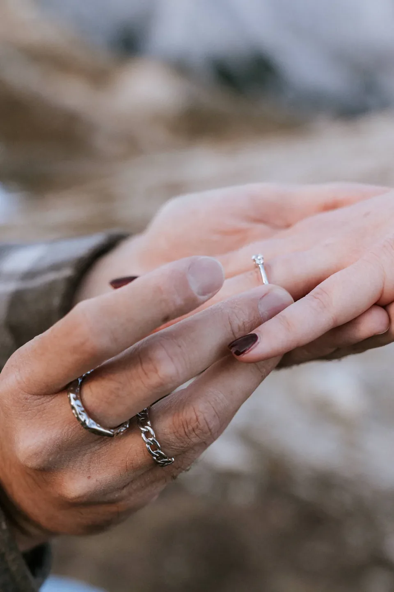
Ist das Ja erst raus, wird der Ring zu einer eigenen kleinen Serie — die Hand auf der Brust, der erste Blick darauf, das Bild vor den Gipfeln. Das sind die Aufnahmen, in die Familien hineinzoomen, deshalb nehmen wir uns ein paar Minuten dafür, solange ihr noch strahlt, und lassen euch dann wieder einfach selig sein.
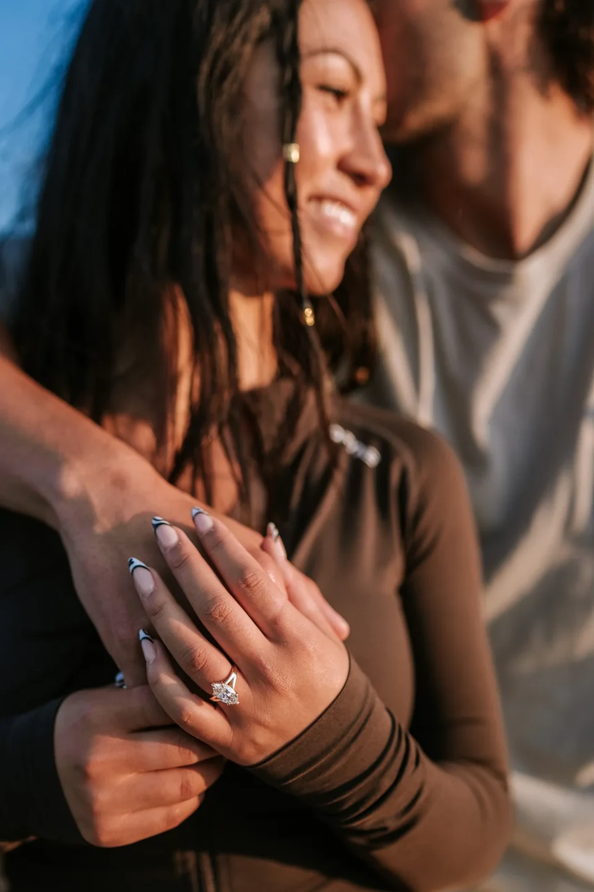
Bergwetter kippt schnell, deshalb ist ein Antragsplan nie ein einzelner Punkt — er ist ein Fenster. Wir beobachten die Vorhersage in den Tagen davor, halten einen Ausweichort bereit, der bei schlechterem Licht funktioniert, und, wo möglich, einen Reservemorgen. Ist eure erste Wahl im Nebel, ziehen wir um; klart es eine Stunde später auf, warten wir. Und fürchtet den grauen Himmel nicht: tiefe Wolken, die durch die Gipfel treiben, oder etwas Regen an einem See schenken einige der filmreifsten, zärtlichsten Bilder, die wir je machen. Das einzige Wetter, das wir wirklich meiden, ist das unsichere.
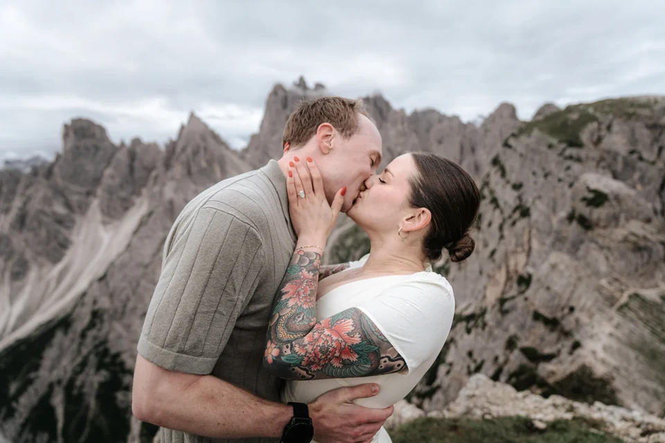
Deshalb verkaufen wir einen Antrag nie als einen einzigen fixen Termin. Wir bauen etwas Spielraum ein — einen früheren Wecker als nötig, einen zweiten Ort zehn Minuten entfernt, einen Reservemorgen, wenn eure Reise es zulässt. Neun von zehn Malen klappt der erste Plan perfekt; beim zehnten Mal ist genau dieser Spielraum der Unterschied zwischen einem nassen Kompromiss und einem Morgen, den ihr euch nicht hättet ausdenken können. Nervöse Energie reicht für den Tag — ums Wetter kümmern wir uns, nicht ihr.
Ein Antrag funktioniert das ganze Jahr, und die Saison verändert das ganze Gefühl. Sommer schenkt grüne Wiesen, Wollgras und langes Licht — die einfachste Logistik und die wärmsten Morgen. Herbst bringt goldene Lärchen und die erste Ruhe nach dem Andrang. Winter ist unser heimlicher Favorit: Schnee bis zum Horizont, eine Stille über allem und ein Kniefall im frischen Pulver, der aussieht wie das Innere einer Schneekugel — ihr braucht nur warme Schichten und gute Schuhe. Wir helfen euch, die Saison zum Bild in eurem Kopf zu wählen, und bauen den Morgen darum.

Zieht euch an wie die beste Version eines normalen Ausflugs — schön genug, dass ihr die Bilder liebt, plausibel genug, dass es euer Gegenüber nicht misstrauisch macht. Ruhige, gedeckte Farben wirken wunderbar vor Fels und Schnee; wilde Logos und Neon nicht. Nehmt warme Schichten mit, die ihr für die Bilder ablegt und dazwischen wieder anzieht, und echte Schuhe für den Boden, auf dem ihr wirklich steht. Ist es eine Überraschung, sagt der überraschten Person einfach: „Wir machen Sonnenaufgangsfotos, zieh etwas an, in dem du dich wohlfühlst“ — genug, um schön auszusehen, nicht genug, um es zu erraten.
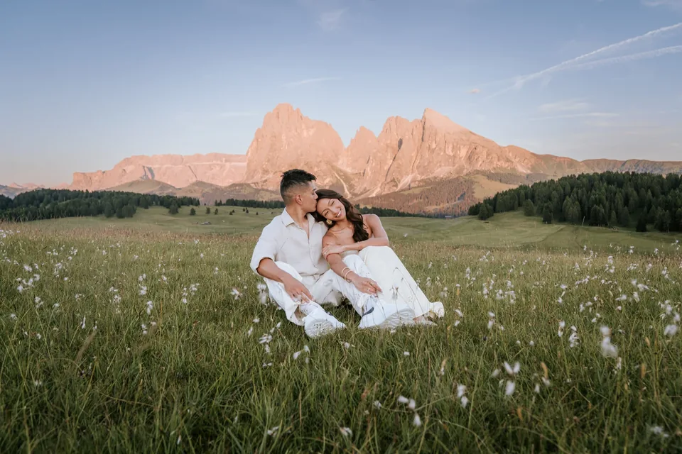
Ein paar Kleinigkeiten machen in den Bildern viel aus. Offenes Haar bewegt sich wunderbar in einer Gipfelbrise, spart euch also den strengen Dutt, außer ihr liebt ihn. Nehmt eine warme Schicht mit, die ihr bis zum Abstieg verstecken könnt, und denkt an eure Hände — sie sind die Stars jedes Ringfotos, ein wenig Pflege lohnt sich dort. Und was ihr auch tragt, tragt es vorher ein: neue Schuhe an einem kalten Morgen sind das Einzige, das garantiert vom Moment ablenkt.
Die meisten Paare fliegen nach Venedig, Verona oder Innsbruck und fahren das letzte Stück — etwa zwei bis drei Stunden ins Herz der Dolomiten, und Innsbruck liegt direkt am Fuß der Nordkette. Wo Bergbahnen zum Plan gehören, gibt die erste Fahrt den Morgen vor: Viele Bahnen öffnen erst nach Sonnenaufgang, ein echter Erstlicht-Antrag heißt daher oft ein Straßensee oder ein zu Fuß erreichbarer Ort. Wir sagen euch genau, wo ihr wann sein müsst und wie ihr hinkommt, und treffen euch am Ausgangspunkt, damit ihr am großen Morgen nie navigieren müsst.
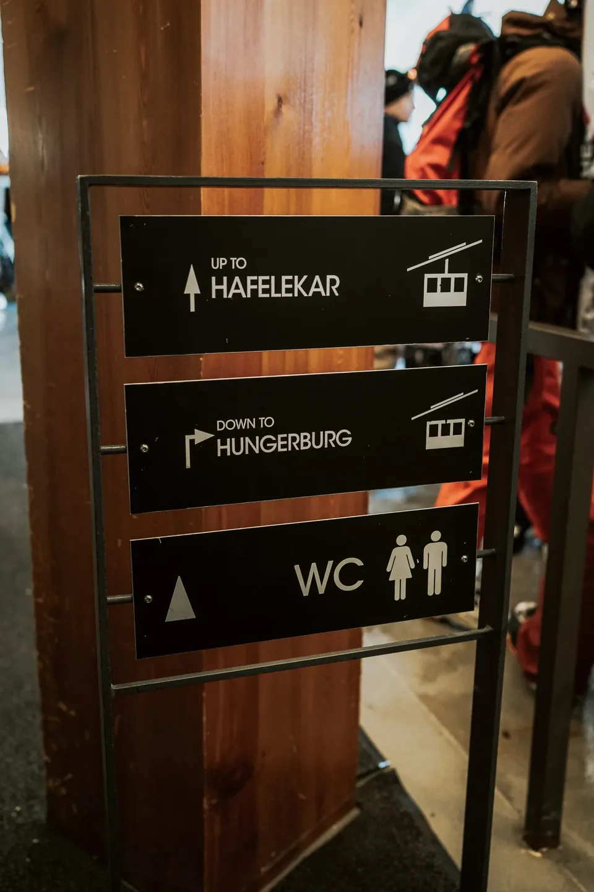
Die berühmten Orte füllen sich — Braies ist um 06:00 Uhr ein anderer Ort als um 11:00 Uhr. Das erste Licht ist der sauberste Weg daran vorbei: Ihr habt das Geländer, die Spiegelung und die Stille vor den Reisebussen. Wo die Zufahrt begrenzt ist, planen wir darum herum — die Straße zum Pragser Wildsee etwa braucht von 09:00 bis 16:00 Uhr zwischen 1. Juli und 15. September eine Voranmeldung, ein weiterer Grund, warum wir lieber zum Sonnenaufgang dort sind. Leeres Licht ist immer das bessere Licht, und ein leerer Aussichtspunkt lässt die Überraschung wie euren ganz eigenen Moment wirken.
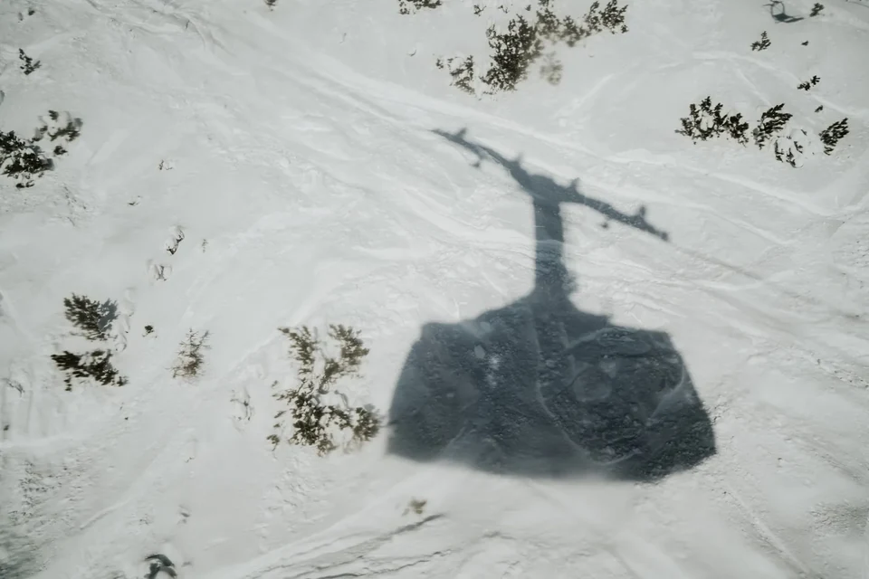
Es hilft, in halben Stunden zu denken. Ein Aussichtspunkt, der um 06:15 Uhr still ist, kann um 07:30 Uhr eine Schlange am selben Geländer haben, deshalb bauen wir den Morgen vom Licht her rückwärts und bleiben den ersten Ankommenden einen Schritt voraus. Ist ein Ort schlicht zu beliebt, um Privatsphäre zu garantieren, sagen wir das und bieten einen ruhigeren Zwilling in der Nähe — fast immer gibt es ein weniger bekanntes Felsband oder Ufer mit denselben Gipfeln dahinter und ohne die Menge davor.
Der Moment ist in Sekunden vorbei; die Feier ist der Rest des Morgens. Sobald wir uns richtig vorgestellt haben, fotografieren wir ein entspanntes Paar-Shooting weiter, solange ihr noch vibriert — das Lachen, das Ungläubige, der erste Anruf nach Hause. Dann werden die Bilder locker und freudig, und oft ist genau das der Teil, den Paare am meisten schätzen. Ein paar Bilder liefern wir noch am selben Tag, damit ihr die Neuigkeit teilen könnt, ehe ihr überhaupt wieder im Tal seid.
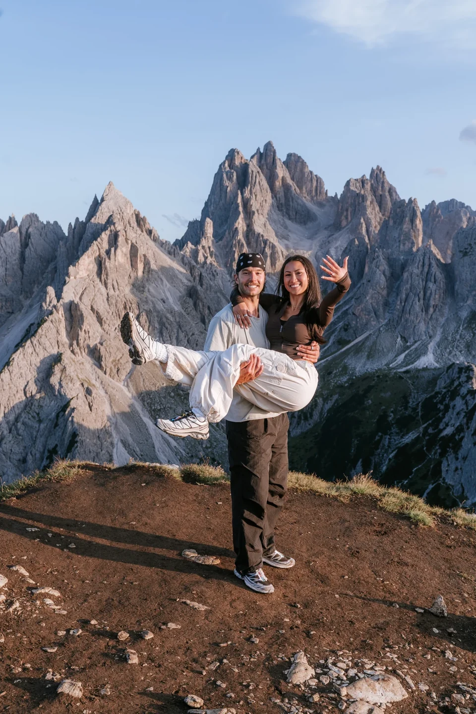
Macht auch einen Tag daraus. Die Dolomiten belohnen einen langsamen Morgen danach: ein Hüttenfrühstück, ein Bad in einem kalten See, eine ruhige Fahrt über die Pässe, während alles ankommt. Cortina, Gröden und die Dörfer der Alta Badia liegen keine Stunde von allem entfernt, voller Terrassen wie gemacht für genau diese Art zu feiern. Wir zeigen euch gern die guten.
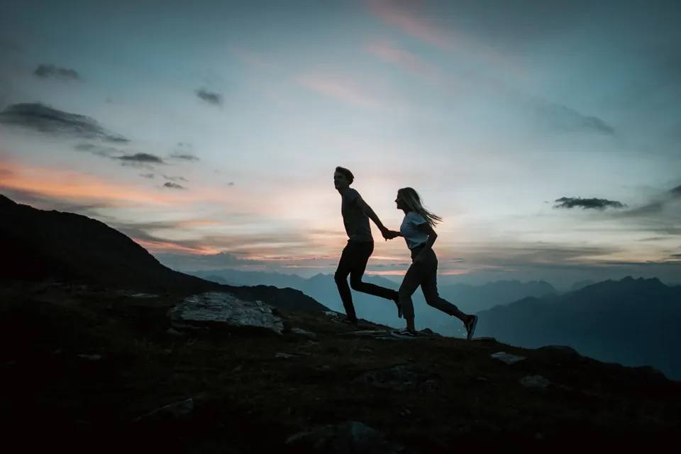
Erstaunlich viele unserer Paare machen hier den Antrag und kommen dann zum Heiraten zurück — die Berge, die die Frage hielten, sind genau dort, wo sie das Ja geben wollen. Flackert dieser Gedanke schon, können wir auf derselben Reise den Samen legen: euch den Ort zeigen, der ein perfektes Elopement abgäbe, durchsprechen, wie das Rechtliche in Italien und Österreich läuft, und euch einen Plan für später mitgeben — ganz ohne Druck jetzt. Der Antrag ist der Anfang der Geschichte; manchmal dürfen wir das Ganze fotografieren.
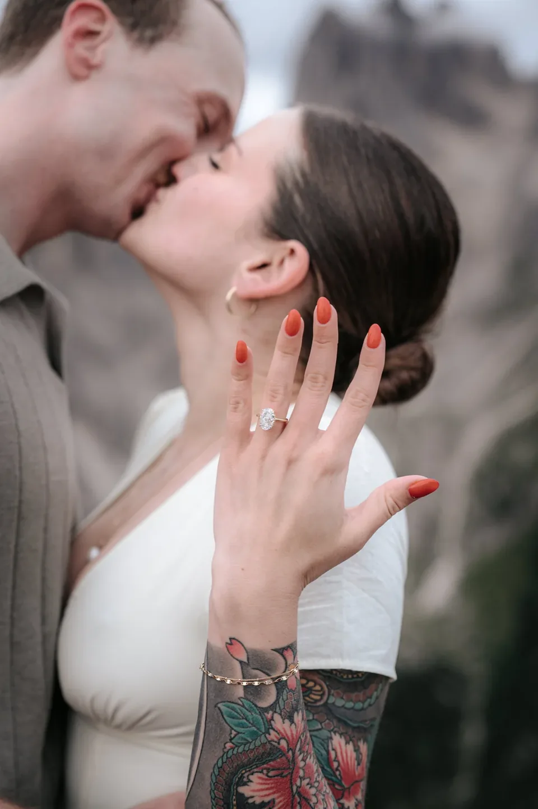
Zwei bis acht Wochen sind angenehm. Wir brauchen genug Zeit, um den Ort zu wählen, die Vorhersage zu beobachten und einen Reservemorgen freizuhalten — aber Anträge sind flink; wir haben schöne mit einer Woche Vorlauf hinbekommen, wenn das Wetter passte.
Wir planen alles per Nachricht mit der antragenden Person, kommen früh an, geben uns als gewöhnliche Wanderer aus und fotografieren aus der Distanz mit Teleobjektiv. Euer Gegenüber merkt meist erst nach dem Ja, dass jemand da war — dann kommen wir für ein richtiges Shooting dazu.
Ein See am Straßenrand oder eine Bergbahn-Aussicht, weil beide keine lange Wanderung brauchen, die die Überraschung verrät. Der Pragser Wildsee und der kleine Lago d'Antorno sind bei erstem Licht Favoriten; ebenso die Seiser Alm und die Nordkette über Innsbruck. Wir stimmen den Ort auf Fitness, Saison und Licht ab.
Bergwetter kippt schnell, deshalb halten wir immer einen Ausweichort und einen Reservemorgen bereit. Tiefe Wolken und etwas Regen sind auch kein Feind — einige der stimmungsvollsten Antragsbilder entstanden genau in diesem weichen, dramatischen Licht.
Ja, und die meisten Paare tun das. Nach dem Ja fotografieren wir weiter für ein entspanntes Paar-Shooting zum Feiern und schicken euch noch am selben Tag ein paar Bilder für die Familie. Viele Paare kommen später für die Hochzeit zurück zu uns.
Fast immer. Das erste Licht schenkt leere Aussichtspunkte, weiche Farben und den Berg fast für euch allein — derselbe Ort ist mittags oft voll und hart im Licht. Um das Timing kümmern wir uns, ihr stellt nur den Wecker.
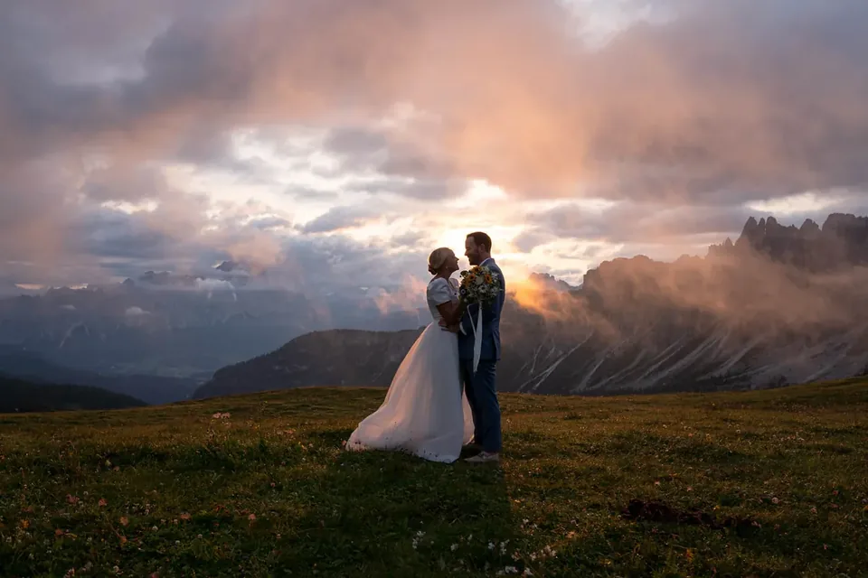
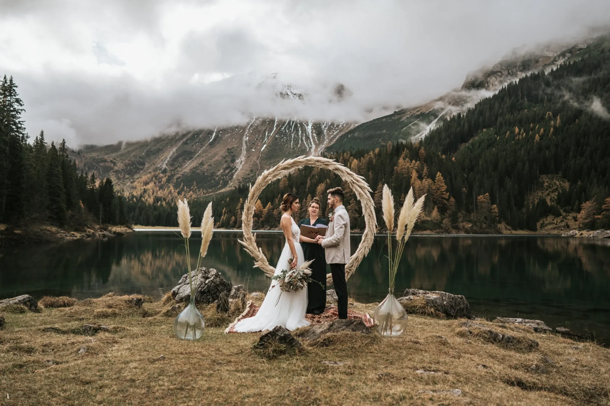


Wir verwenden Cookies für anonyme Statistik (Google Analytics über Google Tag Manager), um die Website zu verbessern. Die Analyse läuft nur mit deiner Einwilligung. Datenschutz